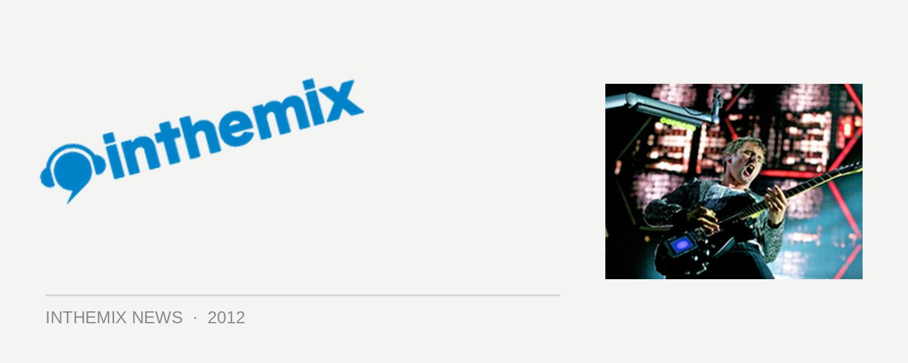

Muse on brostep: "Can rock bands compete?"
“We went to see Skrillex in Camden around October. We went, ‘Fuck, it’s so heavy,’ loved it. I was like a full metal gig, they had circles of death, people were moshing, I hadn’t seen a reaction like that to electronic music before. We took inspiration…”
UK stadium rockers Muse turned a few heads last month when they released a trailer for their upcoming The 2nd Law album, hinting they’d be dabbling in dubstep. In an interview with NME this week, drummer Dom Howard revealed the band was indeed inspired by the righteous lord of brostep himself, Skrillex. The band’s comments also shed light on just how much U.S. dubstep has tapped into the energy of hard rock and heavy metal; it might be light years away from the UK soundsystem origins of the sound, but it’s been a source of inspiration nonetheless.
Singer Matt Bellamy had even more to add. “Some of that hard dubstep and brostep coming from America, is capturing the imagination. The moshpit has moved from guitars and gone towards the laptop, so with that song we’re trying to see if we can challenge the laptop. We created something that was dubsteppy but we wanted to see if we could do it with real instruments. We wanted to ask, ‘Can rock bands compete with what these guys are doing?’”
You can make up your own mind as to whether they’ve pulled it off when The 2nd Law drops on September 17. Meanwhile, Muse are destined to be in your face plenty over the coming weeks, as their song Survival has been chosen as the official track for the London 2012 Olympics. It’s the most bombastic Muse song ever, and that’s saying something.